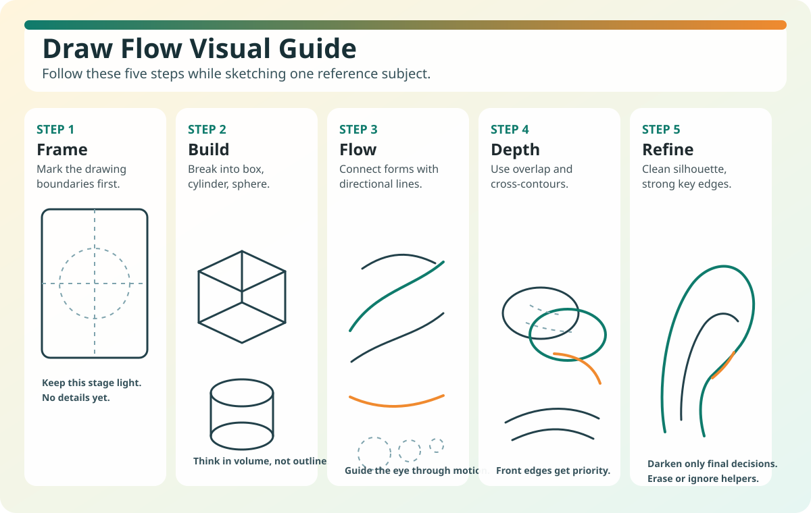

Practice Zone
Exercises
This page turns concepts into habit. Use focused drills and mini-projects so learners can apply each lesson and track progress.
Exercise Set
- Warm-up: draw 10 rotated boxes using light construction lines.
- Choose one object and map it with Frame and Build steps.
- Add Flow and Depth using overlap and contour direction.
- Refine key edges only and complete one clean final sketch.
- Write a 3-line reflection: strongest part, weakest part, next focus.
Draw Flow Reference Guide

Keep this guide visible while practicing so you follow the same process each round.
Practice Rounds
- Round A (15 min): One object, full 5-step process.
- Round B (15 min): New object, same process, faster decisions.
- Round C (10 min): Redraw Round A from memory.
Submission Guide
Submit 3 images labeled A, B, and C. Include your reflection note below the images using this format: "What improved", "What is still weak", and "What I will practice next".